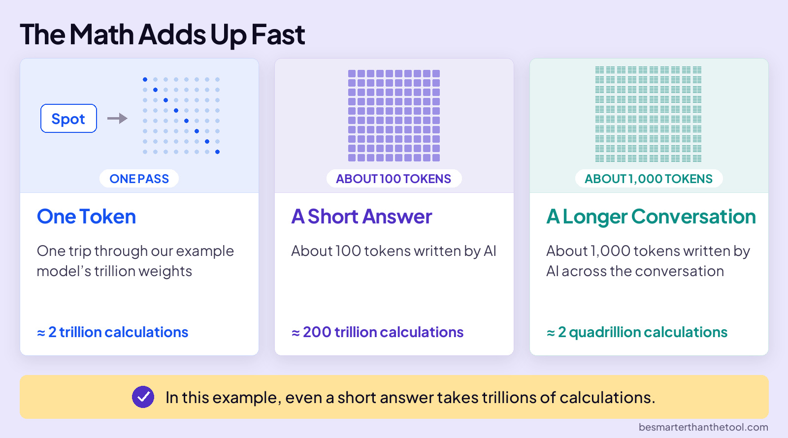

EMBRACE THE FUTURE
Data Centers
You type a question, hit send, and an answer starts appearing. Behind that chat, computers in a data center do an enormous amount of math.
Let’s imagine an LLM that uses one trillion weights to generate each new token. At roughly two calculations per weight, the math adds up fast.

The ability to run that math is called compute.
Now imagine serving millions of people. That’s why AI companies need data centers, and why they are building more of them.
WHAT IS A DATA CENTER
Think of a big warehouse packed with thousands of specialized chips, called GPUs, running around the clock.